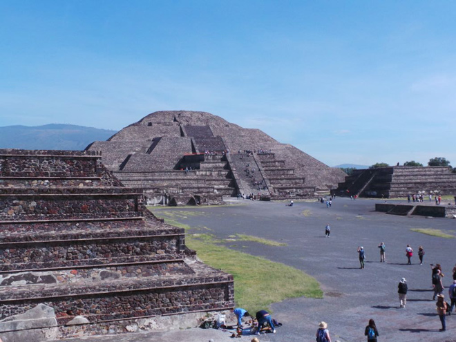
Teotihuacán is about 50km north of Mexico City and is known for its two massive pyramids - of the Sun and the Moon - but was originally Mexico's biggest ancient city which then covered over 20 sq km. We climbed the huge Pirámide del Sol (the third-largest in the world) which was created as a temple, unlike the pyramids in Egypt which were built as tombs.
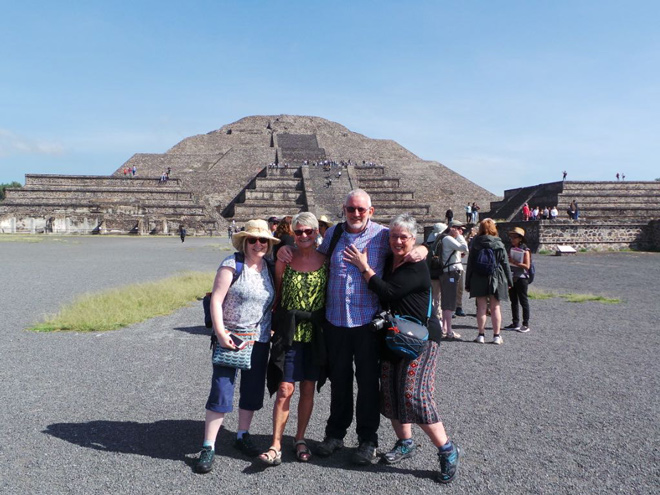
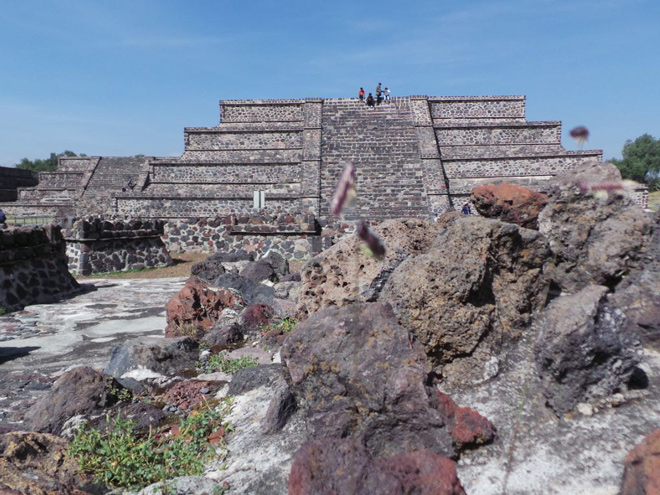
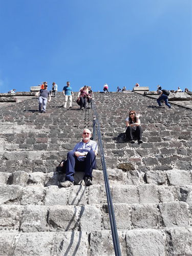
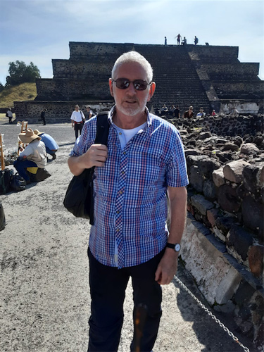
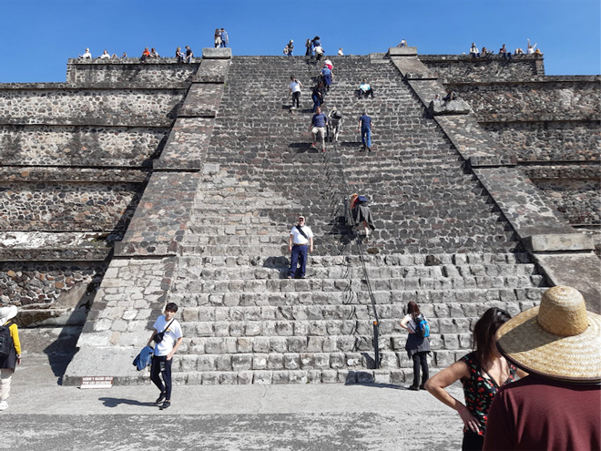
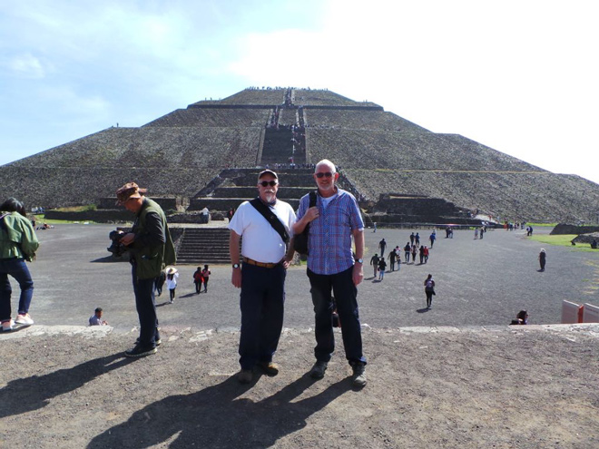
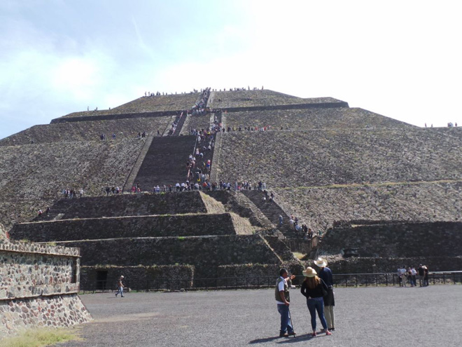
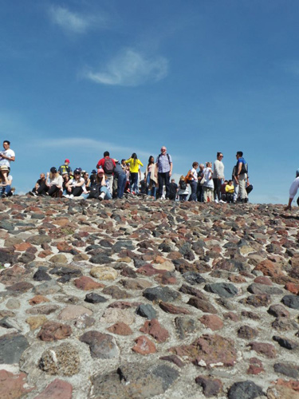
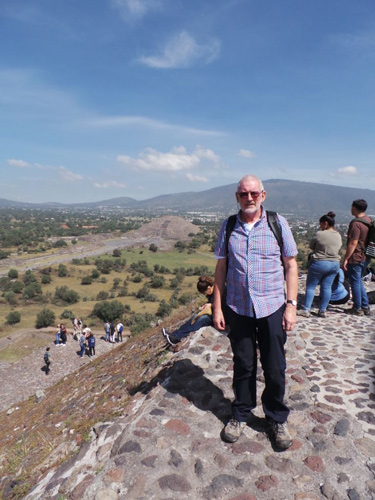
The sun was worshipped here even before the structure was built and thousands of New Age devotees (OK, hippies) still flock here every year to celebrate the vernal equinox. In fact we found one doing yoga at the top when we visited along with a dog who didn't look the slightest bit impressed.
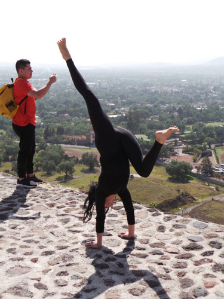
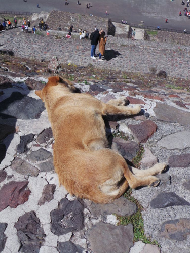
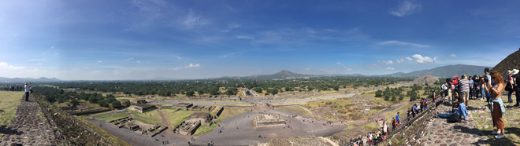
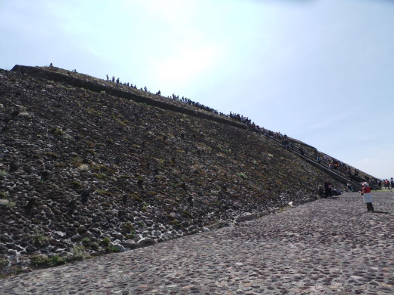
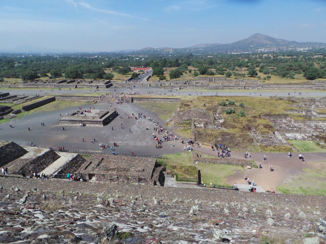
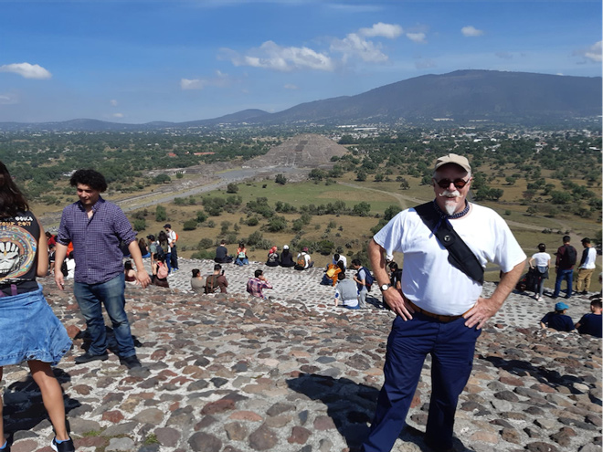
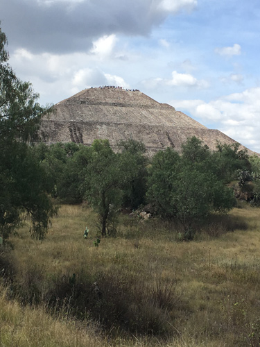
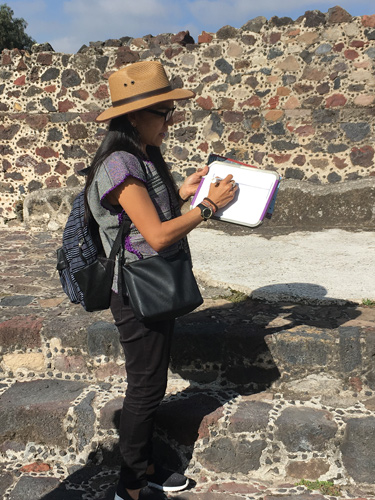
The agave is a very versatile plant, providing sharp needles which can be used for sewing (no kidding) and the flesh can be pounded and distilled into (foul-tasting) mescal which our genial host was very keen to share with us. We then had lunch at an interesting restaurant with the world's smallest mariachi band (two of them) and an Aztec tribute girl act.
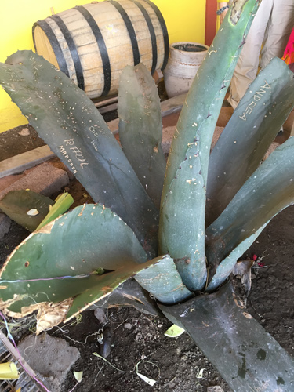
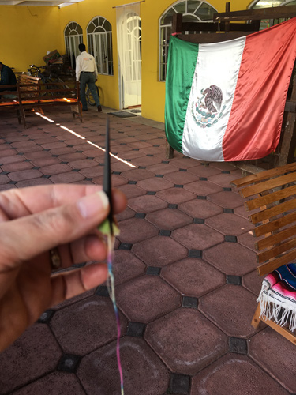
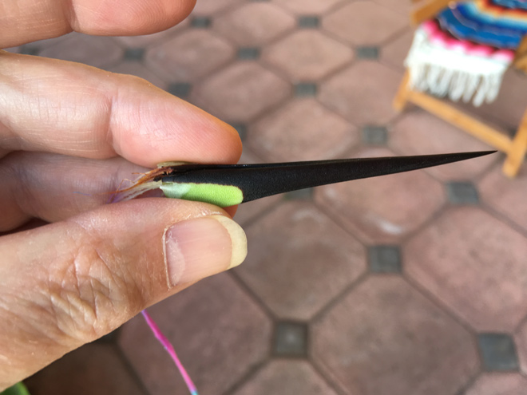
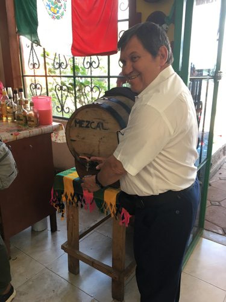
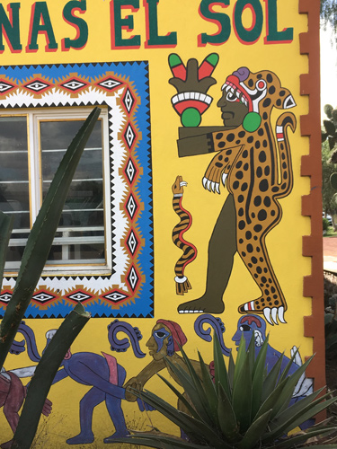
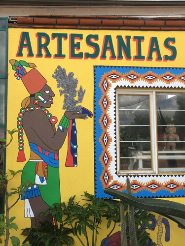
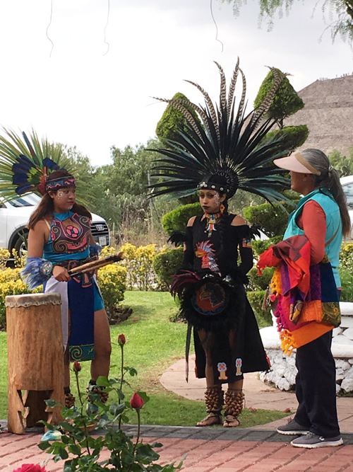
So you think Mexico is all high-art and ethnic culture? Think again. They also do top-class kitsch including a Jesus with great lashes, the Virgin of Guadelupe made of stones, a TV shopping channel selling uplift bras with a hostess dressed as a skeleton, and a chocolate skull with sequins for eyes.
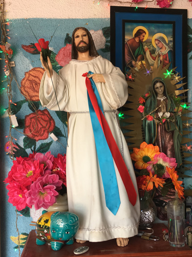
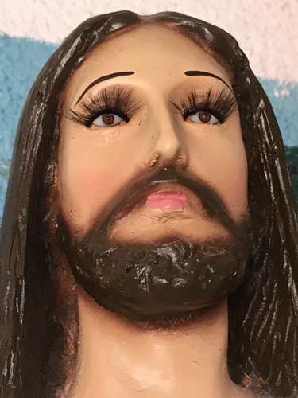
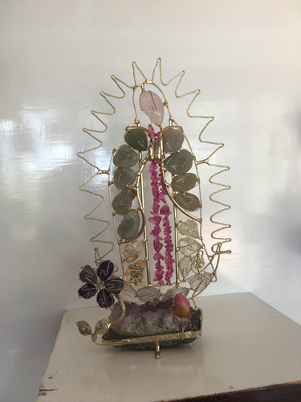
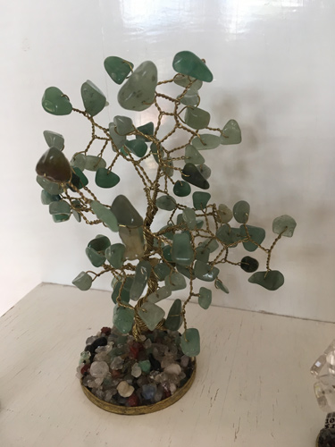
§
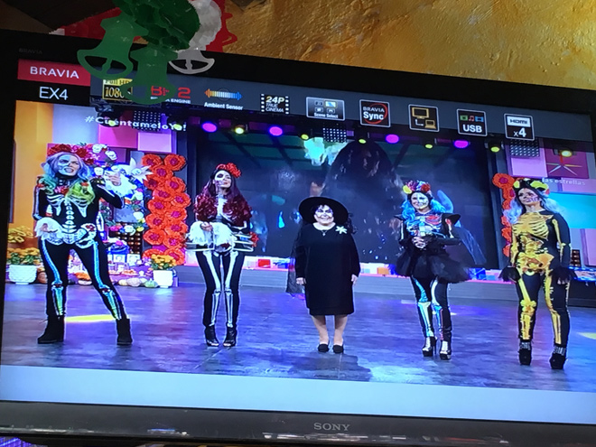
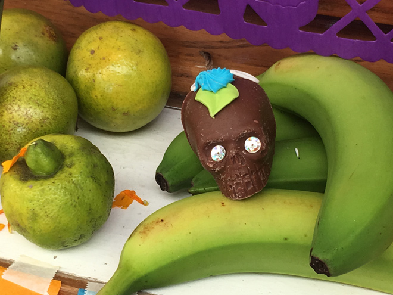